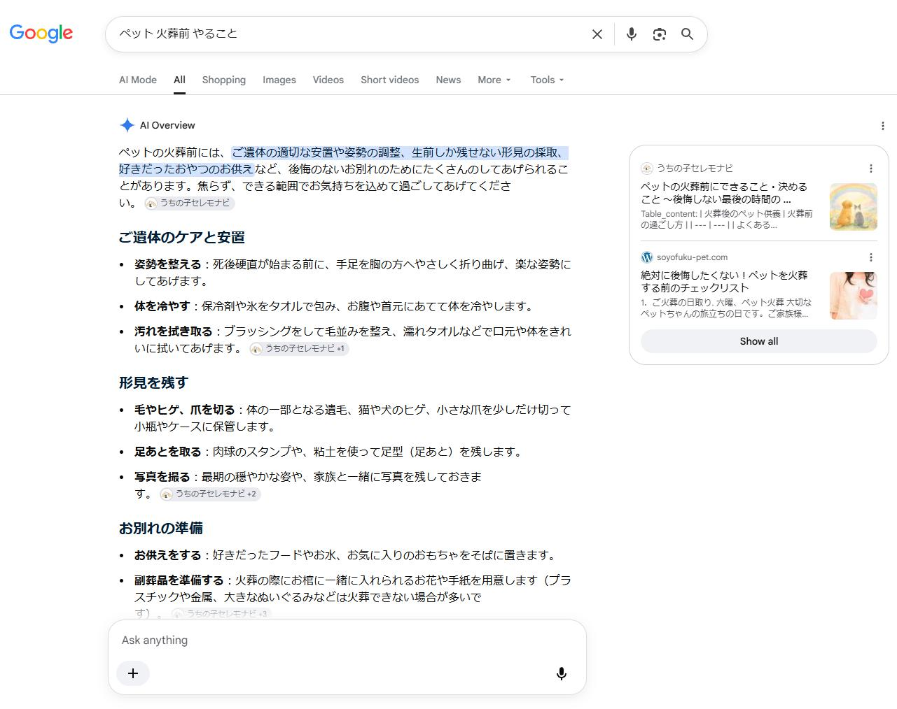

オウンドメディア運営
SEOコラムブログ企画 / AIO2025～現在
概要
- ペットとの別れに関するコラムコンテンツの訴求を通じて、ブランド「ディアペット」の認知・利用の拡大を目指す目的でWordpressブログを運営していました。
- ペットロスというテーマは、検索する人の状況や気持ちがそれぞれ大きく異なります。
だからこそ「何を書くか」を決める段階から、実際のユーザーの検索行動に向き合うことを大切にしてきました。
アクション
■コンテンツ方向性の見直し
- 流入キーワードとキーワードプランナー上の市場検索語を突き合わせ、実際のニーズとズレのある記事から優先的に見直しました。
- あわせてAIサジェストの傾向も定点観測し、AIO（※生成AIを通じた検索）対策として月2本ほどをリライト対象に選定しています。
- 内容が重複していた記事は統合し、単発記事ではなく「総合案内ページ」としてお客さまが迷わず情報にたどり着けるよう再設計しています。
■チームを巻き込んだ運営体制
- 企画は自分が主導しつつ、CSや接客スタッフなどの日々お客さまと直接関わるメンバーにも執筆を担当してもらい、人間味が伝わるように工夫しています。
- 公開後はSNSやメルマガへの展開まで担当し、経路ごとの反応も見ながら次の改善につなげています。
成果

図）AIサジェスト結果に、コラム内容が掲載されるようになった
- ■リライト後のPV増
１．「ペットロス」関連記事 79件→903件。
２．「ペット火葬ノウハウ」記事 684件→2,261件。
- ■問い合わせ増
コラムを内包するサービスの月平均問い合わせ接触数: 62件→75件 - ■関連サービスへの波及
EC本体への流入が増加し、購入数は伸長。
コラム⇒ECアクセス者の経由売上+10%、カート投入等のキーイベントは+43.14%
（いずれも前後約半年〜8か月の数値比較）